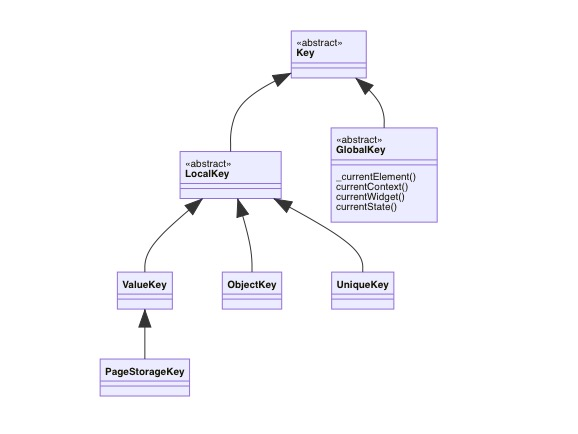

Flutter中的Key
Key简单应用的时候，就是当前 widget 的唯一标识，在重构布局时候防止在同级别 Tree 下无法找到正确的元素及状态
UML
Localkey/
：应用于拥有相同父元素的小部件进行比较的情况
ValueKey
：颗粒度细分的时候使用
ObjectKey
：单一细颗粒度无法满足的时候，多个因素时候使用
UniqueKey
：无法满足唯一性的时候使用
GlobalKey
整个应用中独一无二的键
由该类中方法可以得到对应的Widget、State和Element，当需要跨组件操作时候就可以使用到
1 | abstract class GlobalKey<T extends State<StatefulWidget>> extends Key { |
WidgetsBinding在runApp（即应用启动的时候就会被生成单例）1
2
3
4
5void runApp(Widget app) {
WidgetsFlutterBinding.ensureInitialized()
..scheduleAttachRootWidget(app)
..scheduleWarmUpFrame();
}1
2
3
4
5
6
7
8
9
10
11
12
13
14
15
16
17
18
19
20
21
22/// A concrete binding for applications based on the Widgets framework.
///
/// This is the glue that binds the framework to the Flutter engine.
class WidgetsFlutterBinding extends BindingBase with GestureBinding, SchedulerBinding, ServicesBinding, PaintingBinding, SemanticsBinding, RendererBinding, WidgetsBinding {
/// Returns an instance of the [WidgetsBinding], creating and
/// initializing it if necessary. If one is created, it will be a
/// [WidgetsFlutterBinding]. If one was previously initialized, then
/// it will at least implement [WidgetsBinding].
///
/// You only need to call this method if you need the binding to be
/// initialized before calling [runApp].
///
/// In the `flutter_test` framework, [testWidgets] initializes the
/// binding instance to a [TestWidgetsFlutterBinding], not a
/// [WidgetsFlutterBinding].
static WidgetsBinding ensureInitialized() {
if (WidgetsBinding.instance == null)
WidgetsFlutterBinding();
return WidgetsBinding.instance!;
}
}
- 本文链接：https://www.wl960127.top/posts/8d8888c5/
- 版权声明：本站内容均为个人学习笔记,不涉及商业用途，仅提供学习参考,第三方摘录已署名链接,未署名请评论添加,转载署名来源即可。
分享